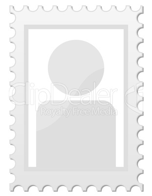

Assistentinnen
Irina Miller (zur Zeit im Mutterschutz)
- Ausbildung zur zahnmedizinischen Fachangestellten 2009-2012
Tätigkeit:
- Stuhlassistenz
Daniela Ardelt
- Ausbildung zur zahnmedizinischen Fachangestellten 2003-2006
Tätigkeit:
- Stuhlassistenz
Jean Münchberg (zur Zeit im Erziehungsjahr)
- Ausbildung zur zahnmedizinischen Fachangestellten 2009-2012
Tätigkeit:
- Stuhlassistenz

Maren Cornelius
- Ausbildung zur zahnmedizinischen Fachangestellten 1999-2002
Tätigkeit:
- Stuhlassistenz